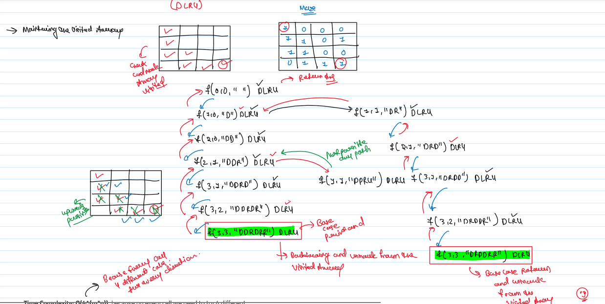

JB TAK FODEGA NHI .... TB TK CHODEGA NHI .... (MAANG)


L22 Rat in a Maze Problem - I
Consider a rat placed at (0, 0) in a square matrix of order N * N. It
has to reach the destination at (N - 1, N - 1). Find all possible paths that
the rat can take to reach from source to destination. The directions in which the
rat can move are 'U'(up), 'D'(down), 'L' (left), 'R' (right). Value 0 at a
cell in the matrix represents that it is blocked and rat cannot move to it while
value 1 at a cell in the matrix represents that rat can be travel through it.
Note: In a path, no cell can be visited more than one time. If the source
cell is 0, the rat cannot move to any other cell.
Example 1:
Input:
N = 4
m[][] = {{1, 0, 0, 0},
{1, 1, 0, 1},
{1, 1, 0, 0},
{0, 1, 1, 1}}
Output:
DDRDRR DRDDRR
Explanation:
The rat can reach the destination at
(3, 3) from (0, 0) by two paths - DRDDRR
and DDRDRR, when printed in sorted order
we get DDRDRR DRDDRR.
Input: N = 2
m[][] = {{1, 0},
{1, 0}}
Output:
-1
Explanation: No path exists and destination cell is blocked.
Constraints:
- 1 <= s.length <=16
- s contains only lowercase English letters.
Notes
Note: Zoom for Better Understanding
Approach:
Recursion Tree

Code Zone!
.png)
.png)
Sb Mai He Kru ...
Khud Bhi Kr le Khuch ..... Nalayk
Time Complexity:O(4^(m*n))because on every cell we need to try 4 different directions.
Space Complexity:O(m*n) Reason: Maximum Depth of the recursion tree(auxiliary space).
Code Zone!
.png)
.png)
Sb Mai He Kru ...
Khud Bhi Kr le Khuch ..... Nalayk
Time Complexity:O(4^(m*n))because on every cell we need to try 4 different directions.
Space Complexity:O(m*n) Reason: Maximum Depth of the recursion tree(auxiliary space).